Streams
deinterleave and nodata split one stream into two before anything else runs. pfor and lanes are terminals that turn numbers into bytes, after any predictor or none.
07deinterleave
deinterleave sends even positions to one stream and odd positions to another, without looking at the values. Each part of an interleaved raster, such as real and imaginary, can then follow its own path.
Recipes do not use deinterleave. Use it in custom low-level OpenZL graphs.
| ctid | 0x72D704 |
|---|---|
| header | none · rebuilt from the two lane counts |
| lanes | even ⌈N/2⌉ · odd ⌊N/2⌋ |
| decode | element 2k from lane 0, 2k+1 from lane 1 |
// encode
even[k] = s[2 * k];
odd[k] = s[2 * k + 1];
// decode
o[2 * k] = even[k];
o[2 * k + 1] = odd[k];geozl.lossless.Deinterleave()08nodata
nodata takes the holes out before anything predicts. It writes a validity mask and fills each hole with the last valid sample of its row, or the sample above when the hole opens the row.
We get it from nodata=, or automatically on a float raster that holds NaNs. Use it only on tiles that have holes.
The pseudocode below is the plain form, a mask of 0 for a hole and 1 for a valid sample. With a declared sentinel and a quantizer after it, the encoder writes the guarded form. A quantizer can rebuild a valid sample exactly on the sentinel, so the mask also records which side of the sentinel each valid sample lies on, 1 above, 2 below and 3 for the other signed zero, and the decoder puts back the matching replacement value instead of a hole.
| ctid | 0x72D70C |
|---|---|
| header | the nodata pattern, optionally followed by three replacement values |
| modes | NaN payloads · one declared sentinel |
| widths | 8 · 16 · 32 · 64-bit samples |
| decode | restore the nodata pattern where the mask marks a hole |
// encode, compared as bit patterns so -0.0 and NaN payloads count
mask[i] = (s[i] == pattern) ? 0 : 1;
v[i] = mask[i] ? s[i] : last valid sample of the row, or the one above;
// decode, plain form
o[i] = mask[i] == 0 ? pattern : v[i];
// decode, guarded form, mask codes 1 to 3 pick a replacement
o[i] = mask[i] == 0 ? pattern : v[i] != pattern ? v[i] : replacement[mask[i]];geozl.lossless.Nodata(width, value, dtype, radius)09pfor
pfor packs each block at the bit width that block needs and patches the few values that overflow it.

Use it after any predictor, as in med>zigzag>pfor. After planar, the recipe planar>zigzag>pfor runs the fused codec instead. On skewed data, an entropy coder or PivCo does better. It also decodes on the GPU. How PFOR works walks through the format.
| ctid | 0x72D70D |
|---|---|
| header | uint64 count · uint8 element width |
| block | 256 values · b bits each · exceptions patched |
| layout | lane interleaved over a 16-byte group |
| credit | design after TurboPFor by powturbo and contributors |
// encode one block of 256 values
b = the width whose block is smallest, counting 4 extra bits per exception;
pack the low b bits of every value;
for each value at or above 1 << b: keep its position and its bits above b;
// decode
unpack 256 values of b bits;
for (j = 0; j < nexc; j++) v[pos[j]] |= hi[j] << b;geozl.lossless.Pfor()10lanes
lanes is the PivCo lane coder without a predictor. It splits each element into byte lanes and codes each lane with PivCo Huffman or byte PFOR, whichever is smaller.

Use id>lanes on skewed data that is not smooth, such as class maps or quality flags. Frames that use PivCo need a reader built on OpenZL 0.3 or later. It also decodes on the GPU. How PivCo works follows a lane to the GPU kernel.
| ctid | 0x72D713 |
|---|---|
| header | uint64 · element count + uint8 · element width + uint32 · PivCo block size + per lane uint8 mode, uint16 weights, uint32 payload |
| values | 8 · 16 · 32 · 64-bit numeric elements |
| lanes | one per byte, stored least-significant first |
| mode | PivCo Huffman, or byte PFOR when smaller |
// encode, byte k of every sample goes to lane k
for (i = 0; i < n; i++)
for (k = 0; k < sizeof(T); k++) lane[k][i] = s[i] >> (8 * k);
// each lane is then coded with PivCo or PFOR
// decode
for (i = 0; i < n; i++) {
o[i] = 0;
for (k = 0; k < sizeof(T); k++) o[i] |= (T)lane[k][i] << (8 * k);
}geozl.graph(tile, "id>lanes")